Eight colours, sampled from the gouache studies and painted with the same engine as everything else. Paintings can be any colour. Everything around them uses only these.
Harbour and Paper. The mark at home.
Paper and Ink, a Sea grass dot for the state.
Mist and Ink, with Signal used once.
Paintings can be any colour. Everything around them uses only these eight.
Text is Ink on the light colours, or Paper on Harbour and Ink.
Signal appears once. One button, one dot, one life ring.
Grid, formats and use cases come later, one touchpoint at a time.